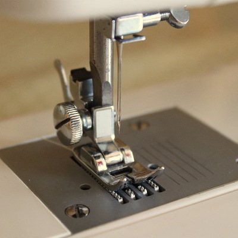
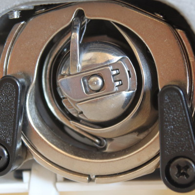
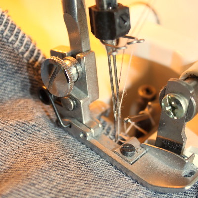
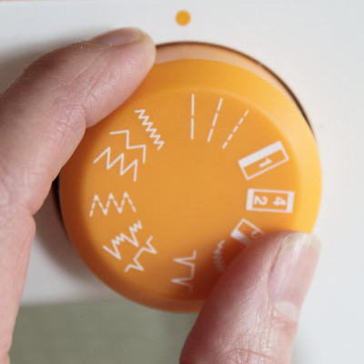

“ The Thread Guide started when I had a problem with my own sewing machine and I struggled to find a good service in Winchester or surrounding parts of Hampshire that could help me repair it. Eventually, with a bit of help (and some mis-direction!) from the internet, I figured out how to get my machine working. After this I went on training courses to develop a better understanding of sewing machines and overlockers and I learnt how to fix them properly. Since then I've worked on many other machines and returned them to good working order – and also helped their owners learn more about their machines and how to use them better. So, how can I help you? ” — Angela
About

Servicing & Repair

Prices start from £50. For a more detailed estimate, let's discuss what problem you're having and I can suggest an appropriate solution.
And if I can't fix it, I won't charge you!
Advice & Tuition

Contact

Or you can follow us online at: